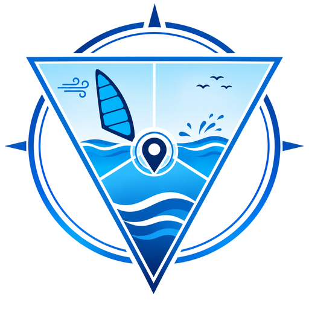

How to save the two pictures. Use a normal desktop-width Chrome window and wait a second for the fonts. Right-click the picture itself and choose Inspect. DevTools highlights a line (div class="og" id="light" or id="dark"), and the whole picture turns blue when you hover it. If it does not, click that line yourself. Press Cmd+Shift+P, type Capture node screenshot and press Enter. Then rename the file to light.png or dark.png and run bash scripts/finish_og.sh ~/Downloads/light.png light (or dark). This page is a tool. It is not copied to the live site.
Know when to go, find people to go with, and discover what to try next.

Know when to go, find people to go with, and discover what to try next.